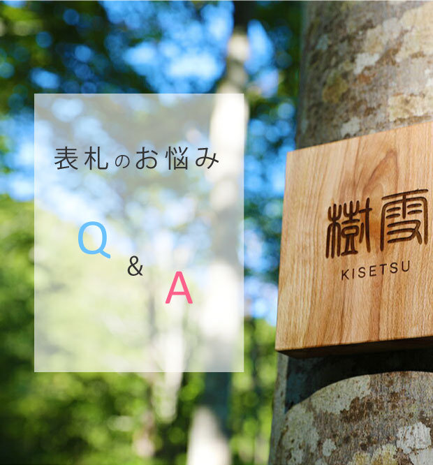
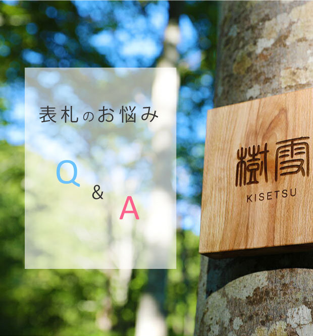
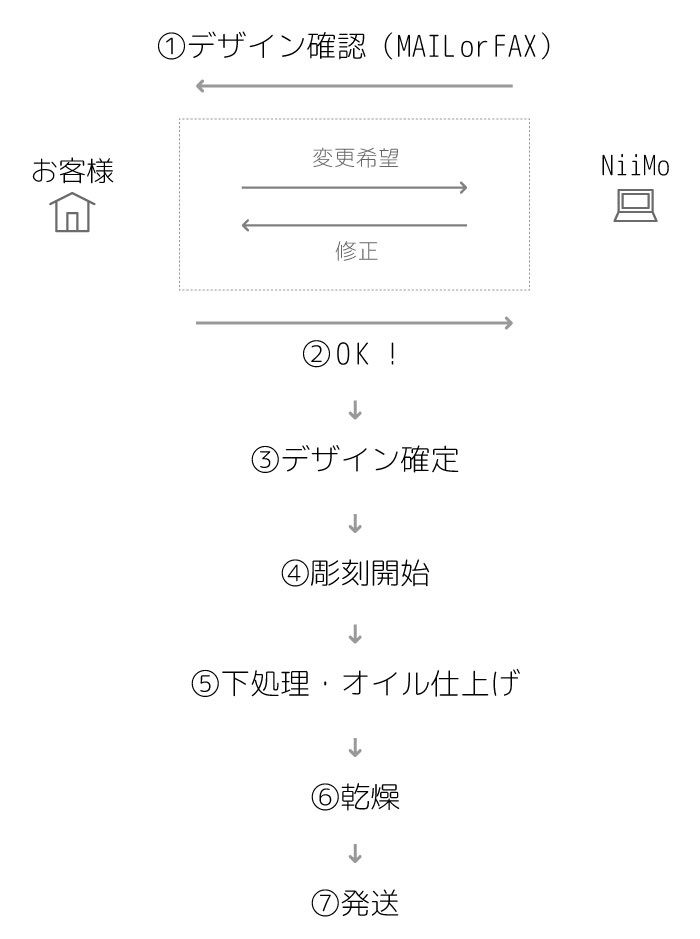
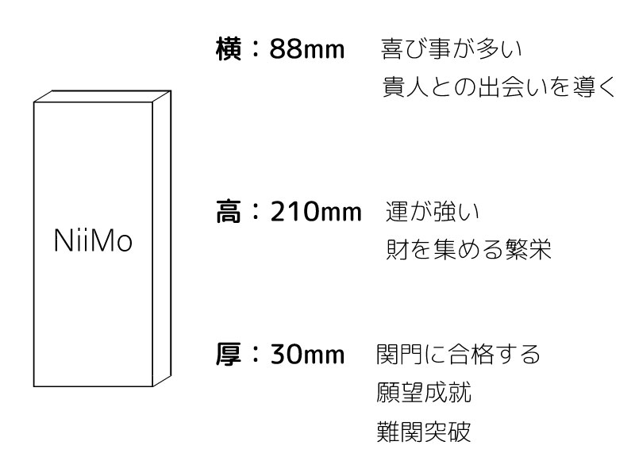
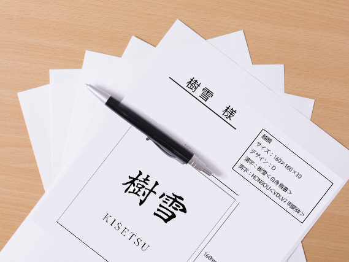
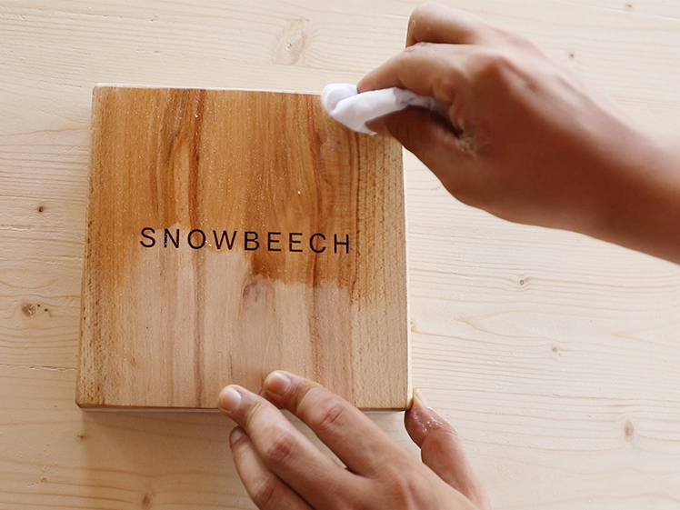

Q＆A一覧
- 納期はどれくらいですか？
-
名入れのオーダーがない商品ですと、3～7営業日後、出荷予定です。
表札など名入れのオーダーがある商品は、ご注文～発送まで、このような流れになります。 
また墨入れのオプションは、乾燥までに3～4日お時間をいただいております。
お急ぎのお客様はお時間に余裕を持ってご注文ください。 -
表札は家の顔！
 ※お客様から写真を提供していただきました
※お客様から写真を提供していただきました
お客様が一番始めに目にする部分の一つに、表札が挙げられます。 その表札が安っぽかったり、名前が消えかかっていたり、品位に欠けるものだと、どう思われるでしょうか。 当店の表札は、美しい木目と職人の彫刻、重厚感のある厚みで風合いと品格を兼ね備えています。
-
お客様へのおもてなし！
お客様や郵便物の配達スタッフは、住所だけでなく表札を見て目的地を確認します。 表札がないゆえに、訪問先の間違いが起こるかもしれません。 まさに一番はじめのおもてなしですよね。 また、表札が天然木だと良いご縁も呼び込むと言われています。
-
表札が出ていない = 主人不在！？
表札が出ていない家は、昔から主人不在と言われています。 ときには空き家だと勘違いされてしまうことも。 ご近所さんに名前を知っていただき、地域とのつながりを大切にされるのもいいと思います。
- 表札の素材の種類が豊富で迷っています。選び方のポイントはありますか？
- 現在、表札にはいろんな素材やデザインがありますよね！ 昔から表札で最も縁起が良いとされているのは、自然素材のものと言われています。
-
天然素材を選ぼう！
当店では、新潟の4mを超える厳しい積雪の中でも倒れずに丈夫にまっすぐ育った樹（越後杉、スノービーチ）を使用した、強いエネルギーを持つ木材のみで作り上げた表札を提供しています。
-
家の力を強めよう！
長い年月をかけて重ねられた美しい年輪は、「発展」や「繁栄」の意味を表しています。 森林のエネルギーを何十年もかけて吸収してきた木材は、家の力を強めてくれると言われています。
-
割れにくい素材を選ぼう！
ガラスや陶器はおしゃれですが、衝撃などが加わると割れる素材です。 割れやすい素材はご家庭の不和や別れにつながるかもしれません。 割れにくい天然素材という点では、昔ながらの木製や大理石が良いとされています。
- 表札の形やサイズの選び方の基準がわかりません。
- 昔から一番多い形は「縦長長方形」ですが、絶対にコレ！という決まりはありません。
-
最もポピュラーなサイズは実は縁起の良い吉寸だった！
昔からよく見かける縦長長方形の一般的なサイズは、考えつくされた吉寸でした。
当店は長方形の表札はこのサイズを採用しています。 -
家の雰囲気に合わせて選ぼう！
和風な住宅でしたら、木製の表札がとても良くお似合いだと思います。 ですが、洋風の雰囲気の住宅に縦長長方形・漢字の氏名フルネームのごてごての表札だとどうでしょうか。 少し違和感が出てしまうと思います。 洋風のお宅には正方形もよくお似合いですし、長方形にアルファベットを混ぜるデザインもおすすめしています。 当店では、漢字だけではなくアルファベットにも対応しているので、いろいろな表情の表札を作制可能です。
-
購入前にデザインの確認ができる！
当店ではサイズやフォントを数種類ご用意しておりますので、迷われる方もいらっしゃると思います。 そこで始めたのが、「デザイン確認サービス」。 5回まで無料なので、「このフォントとあのフォントを比較してみたい！」や「字の大きさをもう少し大きく調整してほしい！」などのデザイン変更を承っております。 納得していただいてからの彫刻になりますので、お時間は少しかかりますが必ずお気に入りのデザイン表札ができると思っています。
- 木製の表札の寿命はどれ位ですか？また、メンテナンスは必要？
- 木は腐りやすいというイメージがあるかもしれませんが、きちんと手入れされた木は長持ちします！
-
オイルでメンテナンスしよう！
当店の表札の素材である木材は、しっかり乾燥された木材のみを扱っています。 しかし永久的に使える素材ではありません。 当店では出荷の前に、独自にブレンドした自然素材100%のオイルを塗っています。 無垢材専用オイルを塗ることによって撥水性を高める効果があり、木材の艶を引き出します。 屋外の雨の当たる場所などではお客様自身でメンテナンスしていただくことによって、より長く美しい表札を保つことが可能です。
-
表札の寿命は環境によってまちまち！
屋内外、直射日光の有無、雨や風が当たる場所か、気温・湿度、降雪のある地域かどうか・・・等、お客様のご事情は様々なので、一概に何年とは申し上げられません。 天然木ゆえに日焼けや多少のシミは防ぐことが難しいです。 ですがこれを劣化とは思わず、味が出ると考えていただき、家と共に生き続けていく魅力的な表札でありたいと思っております。
- 表札の文字は浮き彫りが良いと聞いたのですが、本当ですか？
- 彫刻方法は様々な種類があり、特にこの彫刻方法はNG！というものはありません。
-
名前を彫る≠縁起が悪い
表札の文字を浮かせる浮き彫りは、名前を持ち上げるという点で縁起がいいと言われています。 一方、当店のレーザー彫刻のように文字を彫るタイプの彫刻＝墓石を連想させてしまうので縁起が悪い・・・果たして本当にそうでしょうか？ 諸説ありますが、古くからの風水で文字を彫るというのは縁起が悪いと指摘されているわけではないようです。
-
好みの彫刻を選ぼう！
考え方は様々ありますが、名前を彫る・刻むことで文字が消えにくい表札が出来上がります。 墓石と同じだから縁起が悪いんじゃ・・・とご心配されるかもしれませんが、墓石に彫られている文字は先祖や故人への想いやメッセージであり、全て大切な言葉です。 ですので、彫刻方法も様々ある中からお選びいただくのがベストだと思います。